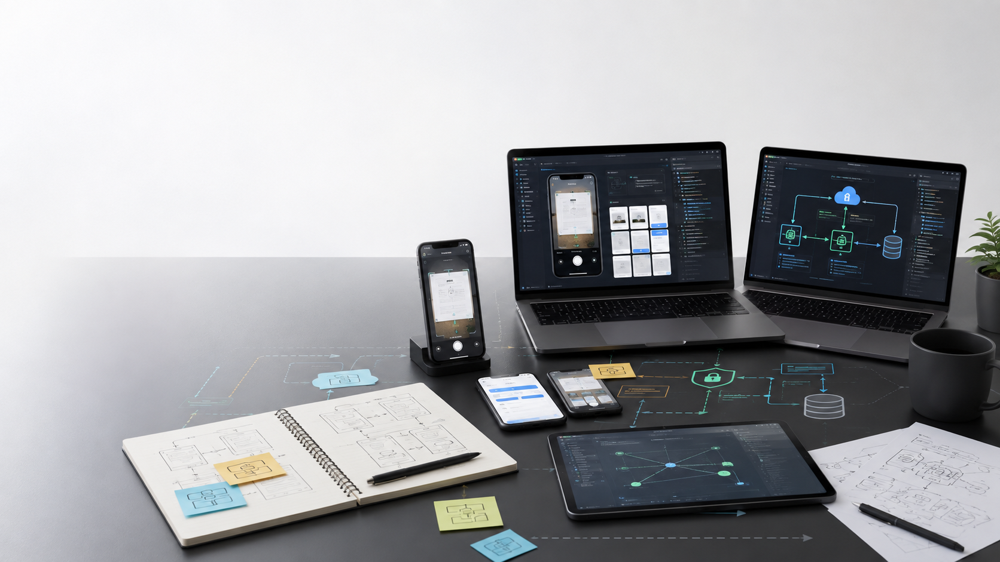
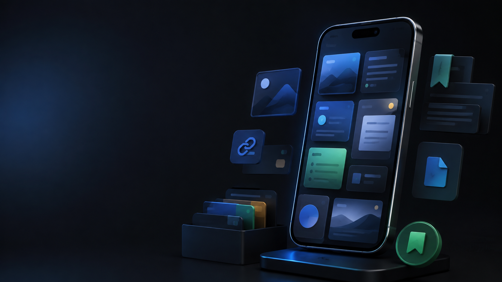

New Graduate Engineering Pitch
Build the mobile memory layer
Memora helps people capture useful links, screenshots, and notes, then recall them when they matter.

New Graduate Engineering Pitch
Memora helps people capture useful links, screenshots, and notes, then recall them when they matter.
Problem
Screenshots, article links, social posts, and short notes sit across mobile apps. The useful material disappears because current tools preserve the object, not the later recall moment.
Product
Screenshots, URLs, text, and photos saved from mobile flows.
OCR, readable link extraction, summaries, and tags run in the background.
Full-text search across items, source, time, and extracted text.
Build Tracks
Learning

Investor Pitch
Memora starts with a focused wedge: the gap between saving useful information and finding it later.
Customer
The first users are knowledge workers, founders, researchers, and curious professionals who already save valuable mobile information every week.
Positioning
Roadmap
Auth, capture, local storage, dashboard, search, settings
Background sync, conflict UI, retry logic
OCR, summaries, keywords, auto tags
Share sheet, export, deep links, widget support
Ask
Capital should fund product polish, sync and security, AI processing quality, and beta growth with clear evidence around activation and repeat use.